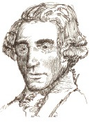

Viyanalı usta saray bestecileri geleneğinde Franz Joseph Haydn (1732-1809), klasik çağın ilk gerçek gözdesiydi. Avusturya’nın Rohrau isimli bir kasabasında işçi bir babanın oğlu olarak fakirlikle büyüdü. Müziğe olan yatkınlığı, genç bir çocukken bile belliydi ve sekiz yaşında Viyana’daki St. Stephen Katedrali’nde koroda söylemeye başladı.

1759’dan 1761’e kadar Haydn, sonraları iflas eden ve tüm müzisyenlerini kovan düşük seviyeli bir asilzade olan Kont Morzin’in sarayında çalıştı. Ancak o zamanlar Haydn, Paul Anton Esterhazy isminde Macar bir prens tarafından işe alınacak kadar yeterli dikkati çekmişti. Hayatının çoğunu Esterhazy’nin evinde günde sekiz saat beste yaparak ve çoklu operaları ve haftalık senfonik performansları da içeren eyaletin müzikal faaliyetlerinin çoğunu düzenleyerek geçirdi.
Haydn’ın programı zorlu görünüyorsa da kariyeri de aynı oranda büyüleyiciydi: 104 senfoni, 68 telli kuartet, 47 piyano sonatı, 26 opera, 4 oratoryo ve o zamandan beri kayıp olan yüzlerce başka eser yazdı. Çeşitli İtalyan, Rokokolu bestecilerin fikirlerinden geliştirdiği değişen tempoların üç veya dört hareketi, telliler, dört veya beş üflemeliler kısmı ve timpani için notaya geçirilen bir senfoni için standart yapı kuran kişi ve aynı zamanda telli kuartet formatını modernize etmesiyle bilinir. Kuartetlerini başkemancılar için solo alıştırmaları yaptırmak yerine, keman, viyolonsel ve çello parçaların arasında melodilerin ve önemli temaların çevresinde hareket etti.
Haydn, yaşamının son dönemini en olgun ve kalıcı senfonilerini ve telli kuartetlerini besteleyerek Londra ve Viyana arasında seyahat etmekle geçirdi. En yetenekli çağdaşı genç Wolfgang Amadeus Mozart (1756-1791) ile tanıştı ve ona ilham kaynağı oldu. Emekli oldu ve sonunda Viyana’da yetmiş yedi yaşında öldü.
EK BİLGİLER:
1. Çoğu barok bestelerinde, her hareket bir ruh haliyle veya duygusal bir doku (hüzünlü, kasvetli, sevinçli vesaire) ile kısıtlanır. Haydn, çoklu ifadeli düzenlemelerle yer değiştiren parçaları, isim vermek gerekirse senfonileri yazan ilk bestecilerden biriydi. Aynı zamanda barok süslü bas kısmını kaldırdı ve onun yerine bir orkestrada pek çok çalgı aleti kullanarak daha karmaşık orkestrasyonlar koydu.
2. Esterhazy’yle kalırken Haydn, yirmi yıl hizmetçilerin bölümünde bir uşak üniforması giyerek ve peruğunu doğru düzgün pudralamadığından sopa cezası gibi durumlar yüzünden aşağılamalarla uğraşmak zorunda kalarak yaşadı.
3. 1749’da Haydn’ın sesi değiştiğinde St. Stephen erkek korosundan sırtındaki giysilerden başka hiçbir şey verilmeden kovuldu. Bu durum bir müzisyenin hayat yolculuğunun bir göstergesidir. Ders vererek, şehrin zenginleri için eğlence müziği besteleyerek ve İtalyan bestecisi Nicola Porpora’ya (1686-1768) çıraklık yaparak ve hizmetçi olarak çalışarak hayatta kalabildi.